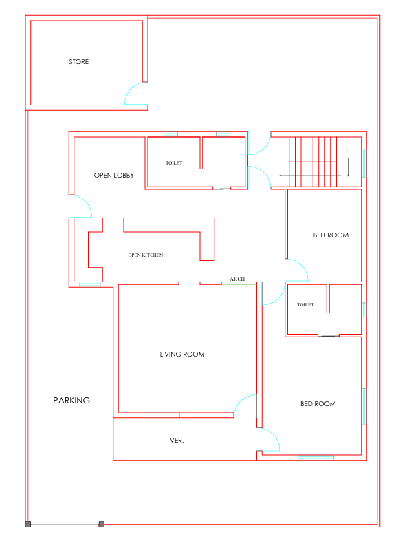
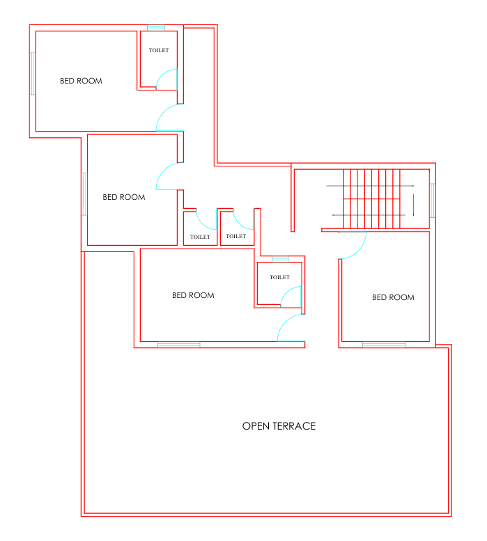
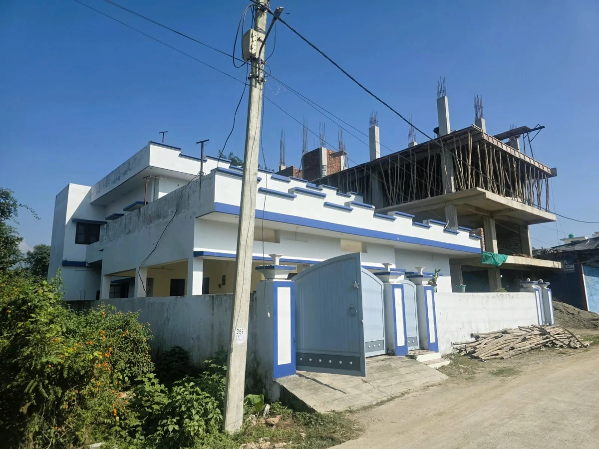
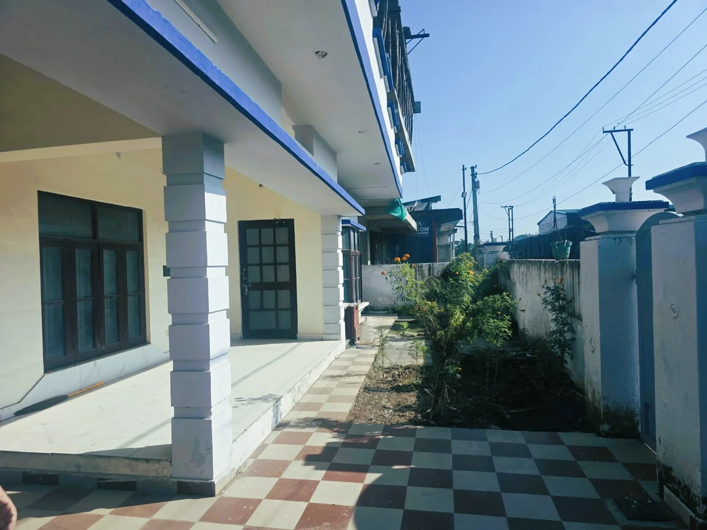
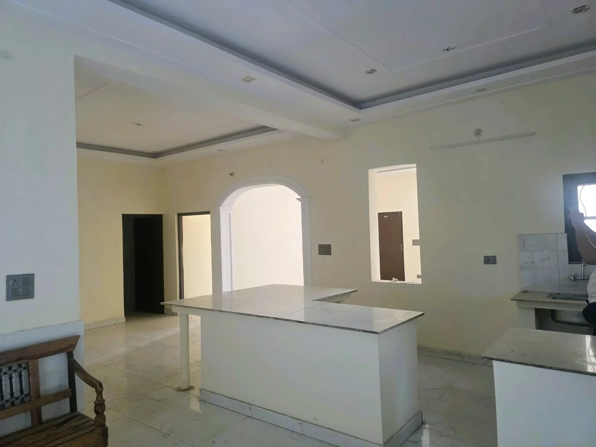

400 sq. yd. of commercial land
3,600 sq. ft. (about 334 sq. m.) in a single parcel, with room to plan, phase or redevelop.
VerifiedVerified Homes by Global Architects | Listing 01
A 400 sq. yd. commercial land property near Haridwar Road, Dehradun, with an existing independent house, 30 ft approach road and registry available.
Listed and verified by Global Architects, Dehradun, on behalf of the owner | Real photos and video, recorded 18 Nov 2026 | Visits by appointment

Documents reviewedRegistry and land classification checked by our team
Plans drawn by architectsGround and first floor plans by Global Architects
Real photos and videoNo stock images. Walkthrough recorded 18 Nov 2026
Four facts that matter to a serious buyer.
3,600 sq. ft. (about 334 sq. m.) in a single parcel, with room to plan, phase or redevelop.
VerifiedWithin about 100 metres, in Kuanwala-Harrawala on the Dehradun-Haridwar corridor.
VerifiedA 30 ft road in front of the plot, wide enough for comfortable two-way vehicle movement.
VerifiedA ground-floor 2 BHK, four rooms upstairs with separate toilets, parking, verandah, store and a large open terrace.
Plans by Global ArchitectsCommercial land
Within about 100 m
Ground-floor 2 BHK
First floor, each with a separate toilet
Existing site features
Additional outdoor space
This is a 400 sq. yd. (400 gaj, 3,600 sq. ft., about 334 sq. m.) commercial land parcel in Kuanwala-Harrawala, Dehradun (Kuanwala is also spelt Kunwala or Kuan Wala), within about 100 metres of Haridwar Bypass. It carries a residential building about five years old, so the plot is usable from day one. This independent house on commercial land is listed for sale by Global Architects, on behalf of the owner.
The ground floor has a 2 BHK layout with a living room, open kitchen, open lobby, store, parking, verandah and toilets. The first floor has four separate rooms, each with a separate toilet, reached by a common staircase, plus a large open terrace.
With a substantial plot, a 30 ft approach road and a location close to Haridwar Bypass, the property can be considered as land to hold or develop, as an existing building to use now, or as a base for suitable commercial-oriented use. Any change of use or redevelopment is subject to applicable land-use regulations, building permissions and statutory approvals.
A commercial land opportunity. An existing residential asset. Multiple possibilities, subject to approvals.
Explore the property through a short walkthrough showcasing its interiors, room layout, living spaces and terrace—giving you a closer look at the property before your site visit.
| Plot | 400 sq. yd. (3,600 sq. ft., about 334 sq. m.) |
|---|---|
| Land classification | Commercial |
| Facing | South |
| Floors | Ground + first + open terrace |
| Ground floor | Living room, open kitchen, open lobby, 2 bedrooms, toilets, store, verandah, parking |
| First floor | 4 rooms with separate toilets, common staircase, large open terrace |
| Age | About 5 years |
| Approach road | 30 ft |
| Location | Kuanwala-Harrawala, within about 100 m of Haridwar Bypass |
| Occupancy | Vacant |
Drawn by our design team for this property. Switch between the ground and first floor.

Living room, open kitchen with an arch to the living room, open lobby, two bedrooms (one with an attached toilet), toilets, store, staircase, verandah and parking.

Four bedrooms and four toilets (two inside the bedrooms, two off the common passage), the common staircase and a large open terrace.
Plans are indicative and not to scale. Please verify measurements on site.
Real photographs of the property. No stock images.




Every use below is a possibility, not a promise. Permitted uses depend on land-use rules, the road, building byelaws and approvals. We help you check them before you decide.
offices, a clinic, coaching or similar activities.
the four first-floor rooms each have a separate toilet, which suits long-term rooms or a guest-house-style format.
use or let the existing building while you prepare a redevelopment plan.
a 400 sq. yd. commercial parcel for a new building under sanctioned plans.
The plot is reached by a 30 ft approach road and lies within about 100 m of Haridwar Bypass. The Harrawala-Doiwala stretch of this corridor is seeing growing commercial and residential activity. The exact location is shared when you request a visit.
Documents are available for your lawyer's or bank's review on request.
Yes. Global Architects has reviewed the land classification. Any change of use or new construction still needs the permissions that apply to the plot.
Possible uses depend on the land-use classification, the road, the type of activity, building byelaws and approvals. We can discuss options, and final confirmation must come from the authority.
The plot is on a 30 ft approach road within about 100 m of Haridwar Bypass.
The registry has been reviewed, and the documents are available for your lawyer's or bank's review.
The price is shared directly on WhatsApp or call.
Loan eligibility depends on the property, the documents and the bank's own assessment, so please check with your bank. We can share documents with your bank or lawyer.
The owner is the seller. Global Architects, a Dehradun architecture firm, has verified the property details and is listing it on the owner's behalf.
The property is vacant. Visits are by appointment; message us on WhatsApp to choose a day.
Global Architects is a Dehradun architecture and construction firm, established in 2017. For this property our team reviewed the registry and the land classification, confirmed the 30 ft approach road and the building configuration, and drew the floor plans ourselves. Every home we list under Verified Homes shows exactly what has been checked, so you can see what stands behind the listing.
our architecture projects, client stories, Verified Homes by Global Architects.
Rajeshwari Complex, Haridwar Road, Dehradunglobalarchitects24@gmail.com